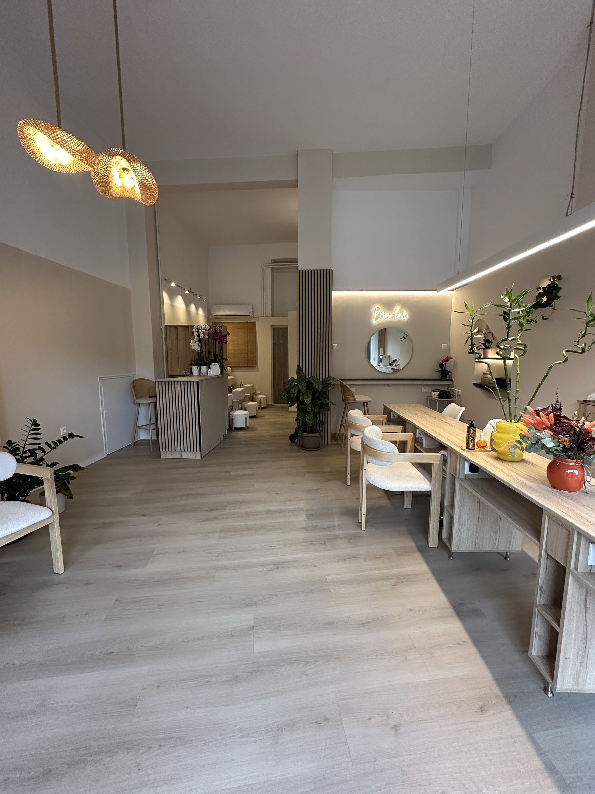

Ένας χώρος που σε ακούει πριν σε φροντίσει.
Στην καρδιά του Κουκακίου δημιουργήσαμε το MYNE με μια απλή αλλά ουσιαστική ιδέα: η ομορφιά δεν χρειάζεται να αλλάζει αυτό που είσαι. Χρειάζεται να αναδεικνύει αυτό που ήδη είσαι.

Πώς ξεκίνησε το MYNE
Εκκρεμεί: η ιστορία της Εύας με δικά της λόγια, από τις ερωτήσεις 1–6 της συνέντευξης: πώς ξεκίνησε, γιατί δημιούργησε το MYNE, γιατί στο Κουκάκι, τι σημαίνει το όνομα.
Ο χώρος
Εκκρεμεί: δύο προτάσεις της Εύας για το πώς ήθελε να νιώθει κάποιος μπαίνοντας.

Πώς δουλεύουμε
Πρώτα ακούμε
Κάθε άνθρωπος είναι διαφορετικός. Πριν από κάθε υπηρεσία ρωτάμε, παρατηρούμε και συζητάμε. Οι προτιμήσεις σου έχουν σημασία.
Προσέχουμε τη λεπτομέρεια
Δεν κάνουμε βιαστικές, γενικές υπηρεσίες. Η λεπτομέρεια κάνει τη διαφορά.
Η καθαριότητα δεν είναι μέρος της υπηρεσίας. Είναι η βάση της.
Εκκρεμεί: οι πρακτικές υγιεινής που εφαρμόζονται, όπως τις περιγράφει η Εύα (ερωτήσεις 33–36). Μόνο ό,τι γίνεται πραγματικά.
Η Εύα
Εκκρεμεί: ονοματεπώνυμο και τίτλος
Εκκρεμεί: βιογραφικό 80–120 λέξεων από τις απαντήσεις της, εγκεκριμένο από την ίδια. Σπουδές και εμπειρία μόνο αν μπορούν να τεκμηριωθούν.
Δεν σχεδιάζω τα ίδια φρύδια σε κάθε πρόσωπο. Κάθε πρόσωπο έχει τη δική του ισορροπία. Η δουλειά μου είναι να την ανακαλύψω.
Το μανιφέστο μας
Πιστεύουμε πως κάθε άνθρωπος είναι διαφορετικός. Κάθε πρόσωπο έχει τη δική του αρμονία, κάθε βλέμμα τη δική του έκφραση και κάθε νύχι τις δικές του ανάγκες.
Γι' αυτό στο MYNE δεν ακολουθούμε μια προσέγγιση ίδια για όλους. Πρώτα ακούμε. Παρατηρούμε. Συζητάμε. Και ύστερα δημιουργούμε μια εμπειρία περιποίησης προσαρμοσμένη σε εσένα.
Στην περιποίηση των νυχιών, η ομορφιά ξεκινά από τη φροντίδα. Δίνουμε έμφαση στην κατάσταση των φυσικών νυχιών, στη σωστή περιποίηση και σε ένα αποτέλεσμα που σέβεται τις ανάγκες τους.
Στα φρύδια, κάθε πρόσωπο είναι ένας διαφορετικός χάρτης ομορφιάς. Με εξατομικευμένο brow mapping, μελετάμε τις αναλογίες, το σχήμα και τα χαρακτηριστικά του προσώπου, ώστε να αναδεικνύουμε τη φυσική του αρμονία.
Στις βλεφαρίδες, στόχος μας είναι να αναδεικνύουμε την έκφραση και τη φυσική ομορφιά του βλέμματος, με προσοχή στις ανάγκες κάθε ανθρώπου.
Και πάνω απ' όλα, πιστεύουμε ότι η πραγματική περιποίηση ξεκινά από την εμπιστοσύνη. Γι' αυτό η καθαριότητα, η υγιεινή, η προσοχή στη λεπτομέρεια και ο σεβασμός στον άνθρωπο δεν είναι απλώς μέρος της υπηρεσίας μας. Είναι η βάση της φιλοσοφίας μας.
Θέλουμε κάθε φορά που περνάς την πόρτα μας να αισθάνεσαι ότι βρίσκεσαι σε έναν χώρο όπου μπορείς να χαλαρώσεις, να εκφραστείς και να αφεθείς στα χέρια ανθρώπων που σε ακούν και σε φροντίζουν πραγματικά.
Δεν πιστεύουμε στην ομορφιά που επιβάλλεται. Πιστεύουμε στην ομορφιά που αναδεικνύεται μέσα από τη γνώση, την ευαισθησία και τη φροντίδα.
Η ομορφιά βρίσκεται στη λεπτομέρεια. Η εμπιστοσύνη χτίζεται στη φροντίδα.
Με δυο λόγια
Το MYNE Nails & Brows είναι ένας χώρος εξατομικευμένης περιποίησης νυχιών, φρυδιών και βλεφαρίδων, που βρίσκεται στην Καλλιρρόης 74, στο Κουκάκι της Αθήνας. Εστιάζουμε στην περιποίηση των φυσικών νυχιών, στο brow mapping και σε υπηρεσίες προσαρμοσμένες σε κάθε άνθρωπο, με προσοχή στην καθαριότητα, στη λεπτομέρεια και στη φροντίδα.
Τηλέφωνο: 210 923 6859 · Email: myne.athens@gmail.com